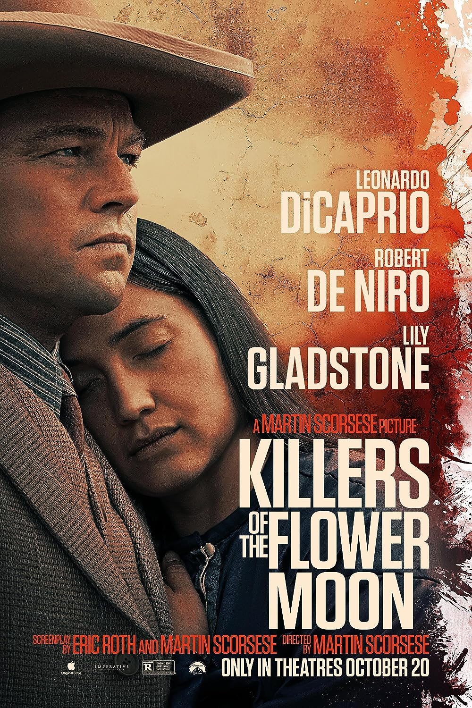

KILLERS OF THE FLOWER MOON |
ㅤ | ||
|---|---|---|---|
|  | SINOPSI | Actors Principals |
|
| Quan es descobreix petroli a Oklahoma en la dècada de 1920 sota la terra de la Nació Osage, el poble osage és assassinat de mica en mica, fins que l'FBI intervé per desentranyar el misteri. |
Leonardo DiCaprio Robert de Niro Lily Gladstone Tantoo Cardinal Cara Jade Myers JaNae Collins |
||
| CRÍTIQUES | |||
| "Una altra pel·lícula de Martin Scorsese de 3 hores i mitja de durada amb temes de màfia i molta matança, però aquesta vegada amb propòsit." | |||
| "Deixant que els espectadors aprenguin una lliçó d'història sobre els assassinats dels nadius americans durant 1910-1930. Val la pena l'Oscar? No realment, però els problemes d'inclusió d'avui en dia poden impactar." | |||
| "Un torrencial Martin Scorsese ajusta comptes amb el pecat original dels Estats Units a 'Killers of the Flower Moon'." | |||
| "El director es pren el seu temps (gairebé tres hores i mitja) però no hi ha res d'aquest temps, ni un minut, que es pugui considerar mort." | |||
| Dirigida per: Martin Scorsese | |||
| Any: 2023 | |||
| País: Estats Units d'Amèrica | |||
| Llegües: Anglès, Francés, Llatí | |||
| Duració: 206 minuts | |||
| Gènere: Història, Crim, Drama |